Réalisations
Nos interventions en images
Création, plantation, entretien, élagage : parcourez les travaux que nous menons dans les jardins de l’Essonne, des Hauts-de-Seine et des Yvelines.

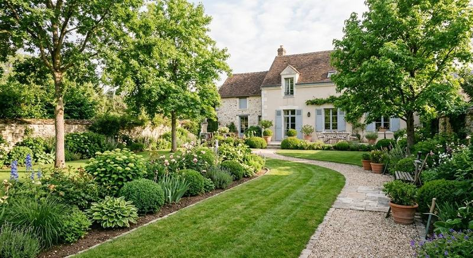

Galerie
Sur le terrain, toute l’année
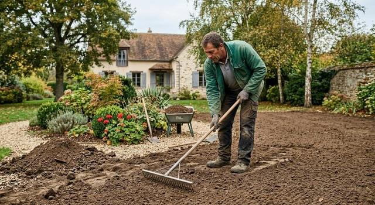
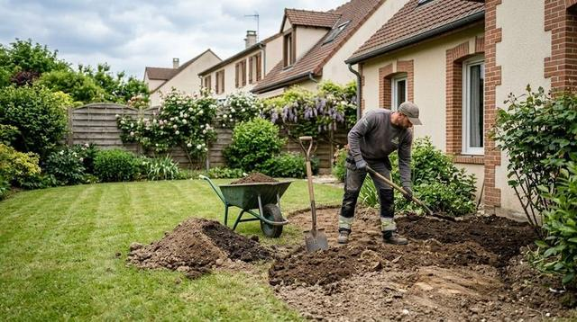
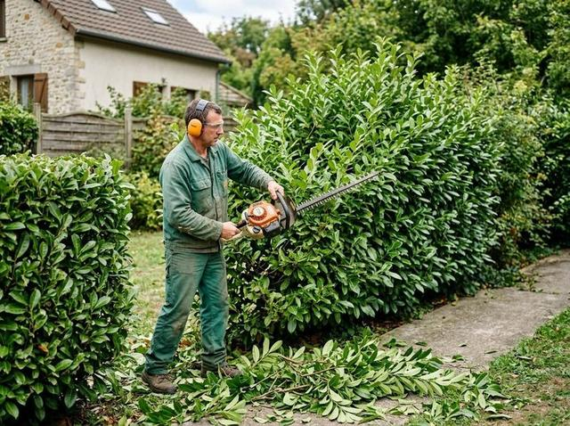
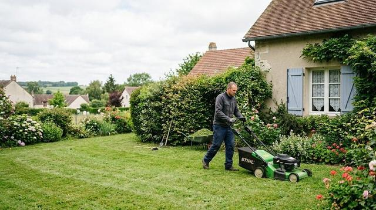
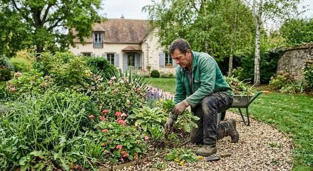
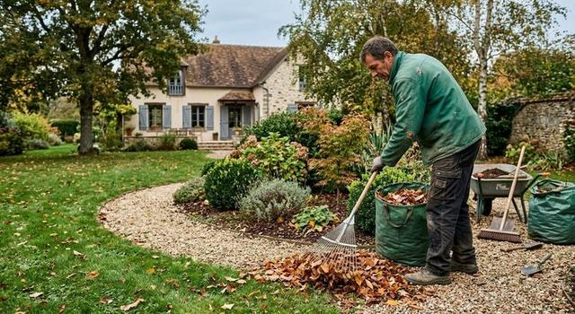
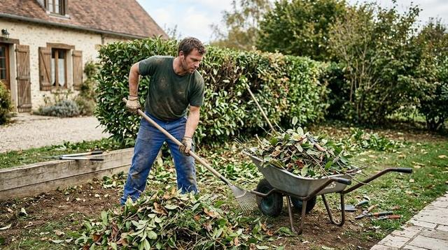
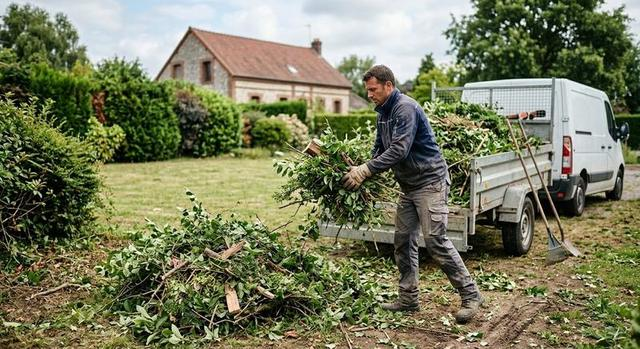
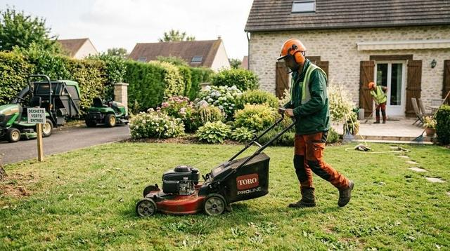
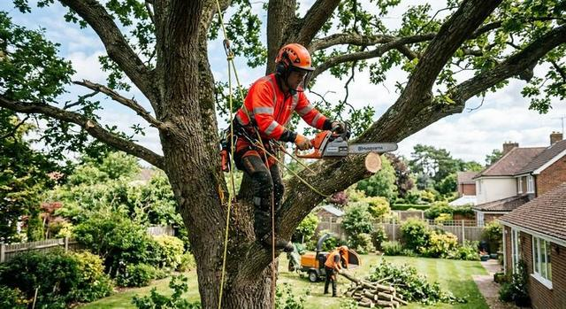
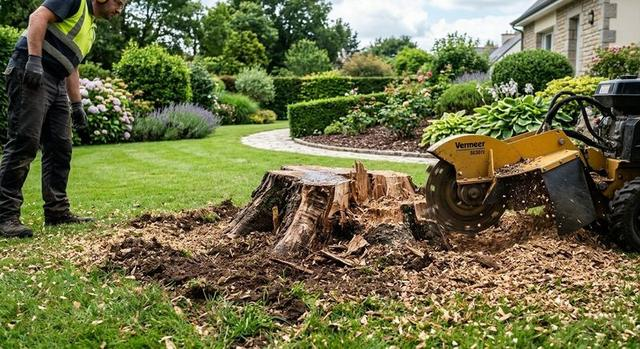
Portfolio
Les domaines que nous présentons
Notre portfolio réunit des chantiers par type de travaux, avec des comparaisons avant et après réalisées en accord avec nos clients.
Créations
- Gazon
- Parterre
- Enrochement
- Plantation
- Bassin
Maçonnerie paysagère
- Escalier
- Piscine
- Pavé
Autres domaines
- Élagage
- Toiture végétale
- Lutte biologique
- Avant / après
Votre projet
Un jardin à transformer ?
Parlez-nous de votre espace vert : nous vous répondons avec un devis gratuit.